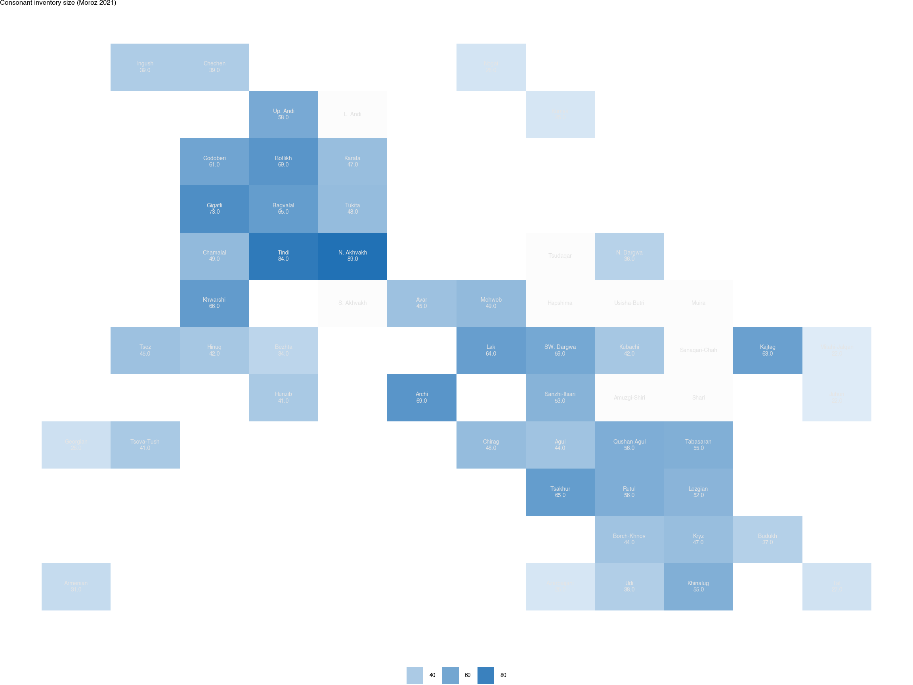
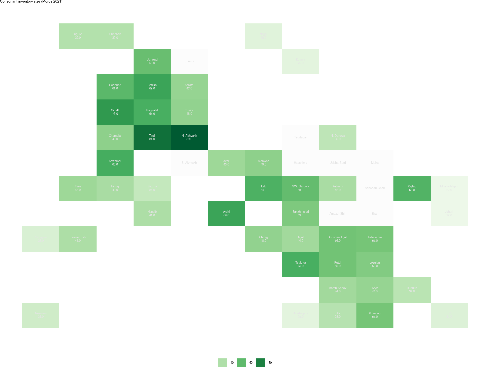
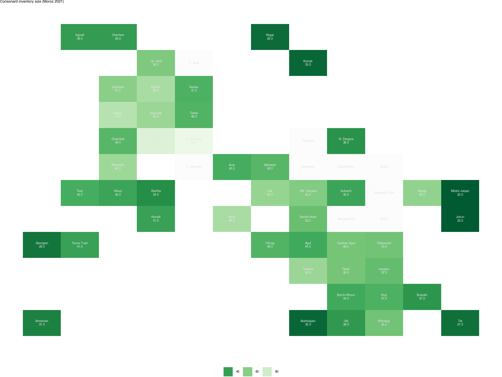
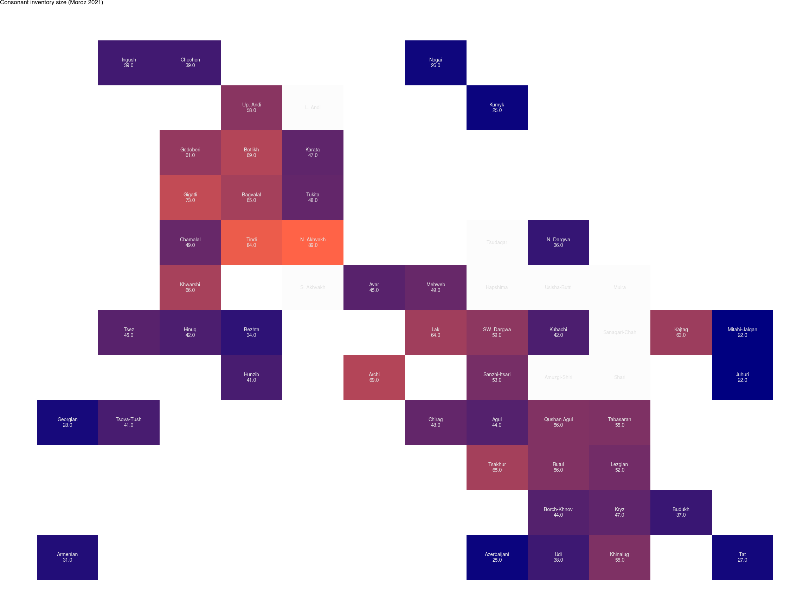
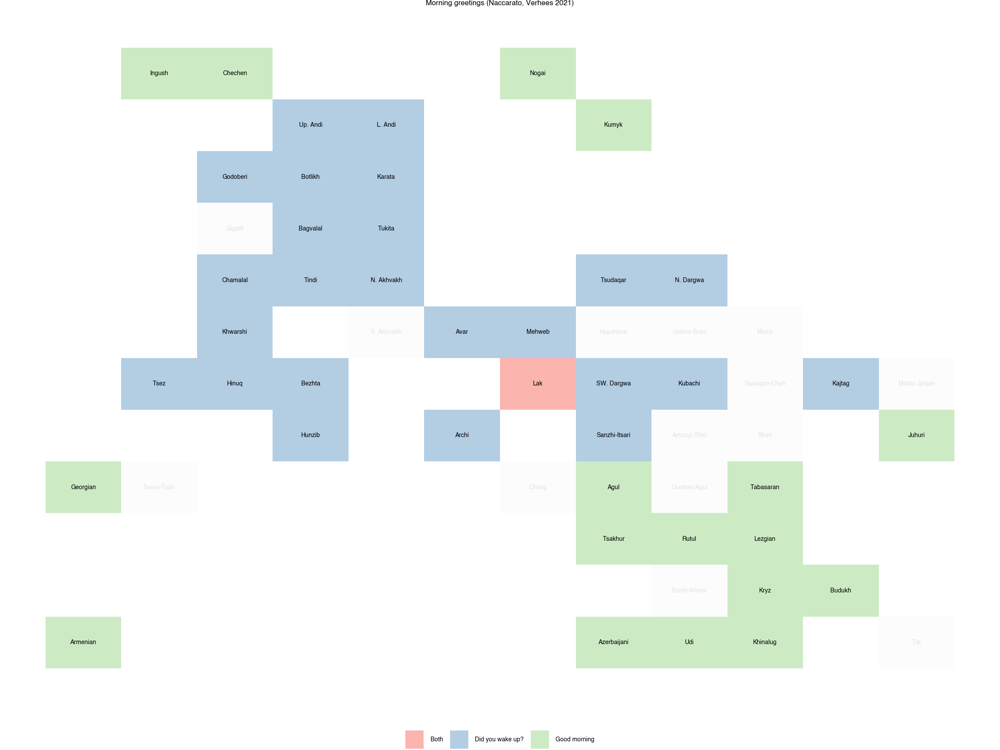
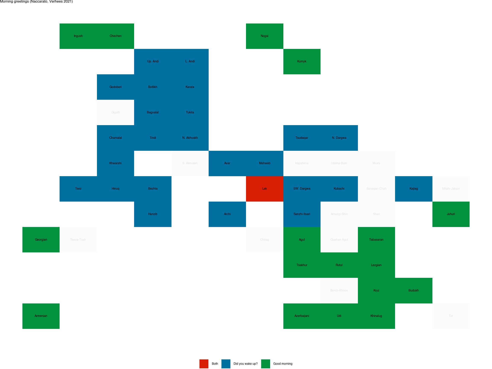

PyCaucTile: Tile Grid Maps for East Caucasian Languages
1 Introduction
PyCaucTile is a package that generates tile grid maps for illustrating features of East Caucasian languages. The plots are created using plotnine library, providing a ggplot2-like interface in Python.
A tile grid map is a popular type of simplified cartographic visualization. Regions on such graphs are usually represented by squares (tiles) of the same or proportional size on a conditional grid of coordinates that preserves the approximate location of objects. So, each rectangle on PyCaucTile maps indicates a language in its approximate position relative to neighboring languages. The linguistic features are encoded by the color of the tile.
This software was created as a part of the project of the Linguistic Convergence laboratory. There is also an R package that shares the same functionality (see RCaucTile) by George Moroz.
2 Installation
The package is available at the PyPI repository, so you can install it using the pip command:
!pip install pycauctile
Requirement already satisfied: pycauctile in ./quarto_env/lib/python3.13/site-packages (1.0.0)
Requirement already satisfied: matplotlib>=3.5.0 in ./quarto_env/lib/python3.13/site-packages (from pycauctile) (3.10.7)
Requirement already satisfied: numpy>=1.21.0 in ./quarto_env/lib/python3.13/site-packages (from pycauctile) (2.3.3)
Requirement already satisfied: pandas>=1.3.0 in ./quarto_env/lib/python3.13/site-packages (from pycauctile) (2.3.3)
Requirement already satisfied: plotnine>=0.10.0 in ./quarto_env/lib/python3.13/site-packages (from pycauctile) (0.15.0)
Requirement already satisfied: contourpy>=1.0.1 in ./quarto_env/lib/python3.13/site-packages (from matplotlib>=3.5.0->pycauctile) (1.3.3)
Requirement already satisfied: cycler>=0.10 in ./quarto_env/lib/python3.13/site-packages (from matplotlib>=3.5.0->pycauctile) (0.12.1)
Requirement already satisfied: fonttools>=4.22.0 in ./quarto_env/lib/python3.13/site-packages (from matplotlib>=3.5.0->pycauctile) (4.60.1)
Requirement already satisfied: kiwisolver>=1.3.1 in ./quarto_env/lib/python3.13/site-packages (from matplotlib>=3.5.0->pycauctile) (1.4.9)
Requirement already satisfied: packaging>=20.0 in ./quarto_env/lib/python3.13/site-packages (from matplotlib>=3.5.0->pycauctile) (25.0)
Requirement already satisfied: pillow>=8 in ./quarto_env/lib/python3.13/site-packages (from matplotlib>=3.5.0->pycauctile) (11.3.0)
Requirement already satisfied: pyparsing>=3 in ./quarto_env/lib/python3.13/site-packages (from matplotlib>=3.5.0->pycauctile) (3.2.5)
Requirement already satisfied: python-dateutil>=2.7 in ./quarto_env/lib/python3.13/site-packages (from matplotlib>=3.5.0->pycauctile) (2.9.0.post0)
Requirement already satisfied: pytz>=2020.1 in ./quarto_env/lib/python3.13/site-packages (from pandas>=1.3.0->pycauctile) (2025.2)
Requirement already satisfied: tzdata>=2022.7 in ./quarto_env/lib/python3.13/site-packages (from pandas>=1.3.0->pycauctile) (2025.2)
Requirement already satisfied: mizani~=0.14.0 in ./quarto_env/lib/python3.13/site-packages (from plotnine>=0.10.0->pycauctile) (0.14.2)
Requirement already satisfied: scipy>=1.8.0 in ./quarto_env/lib/python3.13/site-packages (from plotnine>=0.10.0->pycauctile) (1.16.2)
Requirement already satisfied: statsmodels>=0.14.5 in ./quarto_env/lib/python3.13/site-packages (from plotnine>=0.10.0->pycauctile) (0.14.5)
Requirement already satisfied: six>=1.5 in ./quarto_env/lib/python3.13/site-packages (from python-dateutil>=2.7->matplotlib>=3.5.0->pycauctile) (1.17.0)
Requirement already satisfied: patsy>=0.5.6 in ./quarto_env/lib/python3.13/site-packages (from statsmodels>=0.14.5->plotnine>=0.10.0->pycauctile) (1.0.1)
To use PyCaucTile, you can import the whole package generally, as well as load the functions and data directly
import pycauctile
/Users/tiramissu/Downloads/quarto_env/lib/python3.13/site-packages/plotnine/scales/scales.py:48: PlotnineWarning: Scale for 'fill' is already present.
Adding another scale for 'fill',
which will replace the existing scale.
/Users/tiramissu/Downloads/quarto_env/lib/python3.13/site-packages/plotnine/ggplot.py:630: PlotnineWarning: Saving 12.0 x 9.0 in image.
/Users/tiramissu/Downloads/quarto_env/lib/python3.13/site-packages/plotnine/ggplot.py:631: PlotnineWarning: Filename: test_plot.png
from pycauctile import ec_tile_map, ec_languages
3 Citation
# to be updated
4 How to use PyCaucTile
One of the main utilities of the package is a comprehensive template of East Caucasian languages, complete with color coding that reflects established genealogical classifications. This color scheme is adopted directly from the Typological Atlas of the Languages of Daghestan.
To display this template, simply call the ec_tile_map() function without any arguments:
ec_tile_map()
As you can see, all languages are color-coded according to their language branch: Nakh languages are brown, Andic languages are blue, Lezgic branch is green, and so on. This template sets the default distribution of languages.
In the core of the package there is a built-in dataset ec_languages that contains information about 56 languages from TALD. Most variables are self-descriptive, except for x and y, which define the location of each language on a grid that was constructed for this package based on approximate geographical distribution of languages. The dataset can also be downloaded from the github repository.
The columns also include two features from the Typological Atlas of the Languages of Daghestan:
morning_greetings contains values from the “Morning Greetings” chapter (Naccarato, Verhees 2021) from the Typological Atlas of the Languages of Daghestan. The languages of Daghestan can be classified into three groups according to whether they feature morning greetings including questions about the night’s rest (value Did you wake up?), based on the combination of concepts like “morning” and “good” (value Good morning), and both strategies (value Both).
consonant_inventory_size contains consonant inventory sizes based on “Phonology” chapter (Moroz 2021) from the Typological Atlas of the Languages of Daghestan.
To load your own data, you may prepare a table with columns language and feature and use it within the ec_tile_map() function. While we will create a simple table on the fly for demonstration purposes, in practice it is more convenient to use pandas functions like read_csv(), read_excel(), or similar data import methods.
The languages for which no data in the feature column is available are displayed in light grey color. There is a possibility to hide all unused languages with the …
# to be updated
In practical research scenarios, feature columns often have descriptive names rather than the generic “feature”. The feature_column parameter in the ec_tile_map() function allows providing any name for the data column:
ec_tile_map(title ="This is a Tile map of East Caucasian languages", title_position ="right")

For numerical features or categorical variables with concise values, direct annotation of feature values on the map significantly enhances interpretability. The annotate_feature parameter contains the functionality:
The default color schemes may not always align with your needs or publication requirements. plotnine offers extensive flexibility by access to ggplot2 color scales.
For numerical data, one can use the scale_fill_distiller() function with one of the palettes (Blues, BuGn, BuPu, GnBu, Greens, Grey, Oranges, OrRd, PuBu, PuBuGn, PuRd, Purples, RdPus, Reds, YlGn, YlGnBu, YlOrBr, YlOrRd).
from plotnine import scale_fill_distillerec_tile_map(ec_languages, feature_column ="consonant_inventory_size", title ="Consonant inventory size (Moroz 2021)", annotate_feature =True) \+ scale_fill_distiller(palette ="Greens")
/Users/tiramissu/Downloads/quarto_env/lib/python3.13/site-packages/plotnine/scales/scales.py:48: PlotnineWarning: Scale for 'fill' is already present.
Adding another scale for 'fill',
which will replace the existing scale.

There is a direction argument that controls the order of the colors in the palette, so it can be reversed by setting it to -1:
/Users/tiramissu/Downloads/quarto_env/lib/python3.13/site-packages/plotnine/scales/scales.py:48: PlotnineWarning: Scale for 'fill' is already present.
Adding another scale for 'fill',
which will replace the existing scale.

To define your own palette for a numeric variable, you can use the scale_fill_gradient() function:
from plotnine import scale_fill_gradientec_tile_map(ec_languages, feature_column ="consonant_inventory_size", title ="Consonant inventory size (Moroz 2021)", annotate_feature =True) \+ scale_fill_gradient(low ="navy", high ="tomato")
/Users/tiramissu/Downloads/quarto_env/lib/python3.13/site-packages/plotnine/scales/scales.py:48: PlotnineWarning: Scale for 'fill' is already present.
Adding another scale for 'fill',
which will replace the existing scale.

When the color scheme is clear and the annotate_feature argument displays the exact feature values on the map, it makes sense to remove the legend:
from plotnine import themeec_tile_map(ec_languages, feature_column ="consonant_inventory_size", title ="Consonant inventory size (Moroz 2021)", annotate_feature =True) \+ scale_fill_gradient(low ="navy", high ="tomato") \+ theme(legend_position ="none")
/Users/tiramissu/Downloads/quarto_env/lib/python3.13/site-packages/plotnine/scales/scales.py:48: PlotnineWarning: Scale for 'fill' is already present.
Adding another scale for 'fill',
which will replace the existing scale.
For categorical features, plotnine provides the scale_fill_brewer() function, which can be used with one of the ggplot2 palettes (Accent, Dark2, Paired, Pastel1, Pastel2, Set1, Set2, Set3).
/Users/tiramissu/Downloads/quarto_env/lib/python3.13/site-packages/plotnine/scales/scales.py:48: PlotnineWarning: Scale for 'fill' is already present.
Adding another scale for 'fill',
which will replace the existing scale.

The scale_fill_manual() function can be used to define your own palette for a categorical feature.
from plotnine import scale_fill_manualec_tile_map(ec_languages, feature_column ="morning_greetings", title ="Morning greetings (Naccarato, Verhees 2021)") \+ scale_fill_manual(values = ("#D81E05", "#0070A1", "#00923F"), na_value=None)
/Users/tiramissu/Downloads/quarto_env/lib/python3.13/site-packages/plotnine/scales/scales.py:48: PlotnineWarning: Scale for 'fill' is already present.
Adding another scale for 'fill',
which will replace the existing scale.

6 Changing the values’ order
In Python, categorical variables by default follow the order in which unique values first appear in the dataset. To define a custom ordering that better reflects the feature, you can use pd.Categorical data type. The following approach preserves the original values while instructing Python to treat them as ordered:
The East Caucasian language family exhibits significant dialectal differentiation. A unified genealogical classification of all idioms spoken in Daghestan does not exist. The default language inventory in PyCaucTile is based on the genealogical classification from the Typological Atlas of the Languages of Daghestan (see the languages page). Therefore, it is highly probable that some researchers may wish to modify the default inventory by removing or altering the names of existing units.
To remove specific languages from the template, list the desired languages in the hide_languages argument.
In order to change the names of existing languages in the template, you need to provide the rename_languages argument with an object that maps old language names to their corresponding new names. This can be represented as either:
A dictionary, where the keys are the old language names and the values are the corresponding new language names.